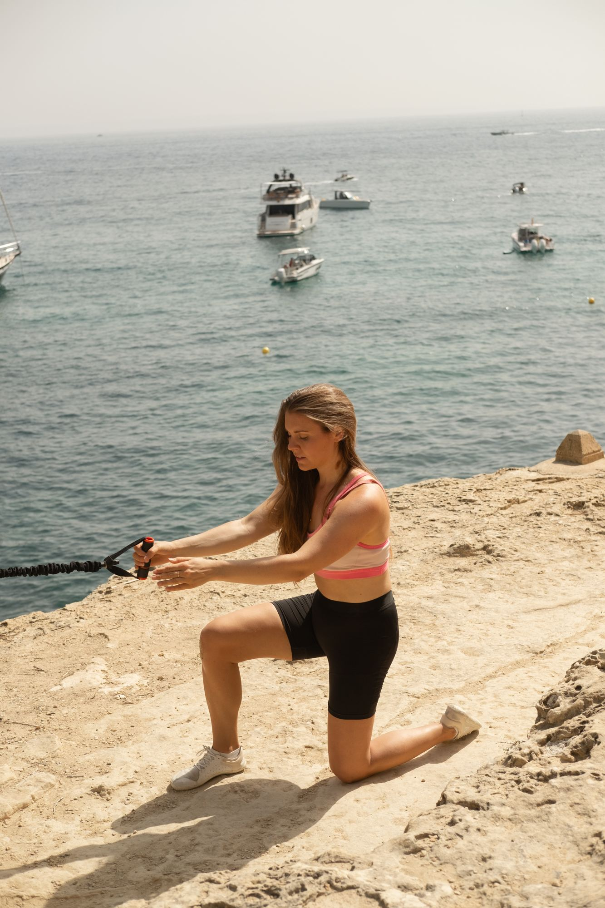

Återställ rörelse. Bygg styrka.
Vetenskapligt grundad styrketräning baserad på modern biomekanik som förbättrar andning, kroppshållning och rörlighet samtidigt som du bygger styrka.
Låt oss bygga ett styrkeprogram som är utformat specifikt för hur just din kropp rör sig.
De flesta styrkeprogram frågar hur du blir starkare. Den här metoden frågar först hur din kropp är designad att röra sig.
Baserat på modern biomekanik, gångprinciper och samtida rörelsevetenskap — inklusive koncept utvecklade av rörelsespecialisten Conor Harris — tittar vi på hur din kropp andas, roterar, överför kraft och anpassar sig. Ditt styrkeprogram utformas sedan för att återställa effektiv rörelse samtidigt som du blir starkare, mer balanserad och mer motståndskraftig.
När du bokar den här sessionen får du:
- En personlig biomekanisk bedömning
- Ett gymbaserat styrketräningsprogram utformat specifikt för din kropp
- Ett smartare sätt att bygga styrka genom bättre rörelse
Din kropp kan lära sig att röra sig annorlunda.
Du behöver inte acceptera smärta, stelhet eller begränsad rörlighet bara för att du suttit vid ett skrivbord i flera år, utövat en enda sport eller återhämtat dig från en skada.
Modern biomekanik förändrar hur vi förstår rörelse. Genom att förstå hur din kropp har anpassat sig kan vi hjälpa till att återställa balans, förbättra rörelsemönster och bygga bestående styrka.